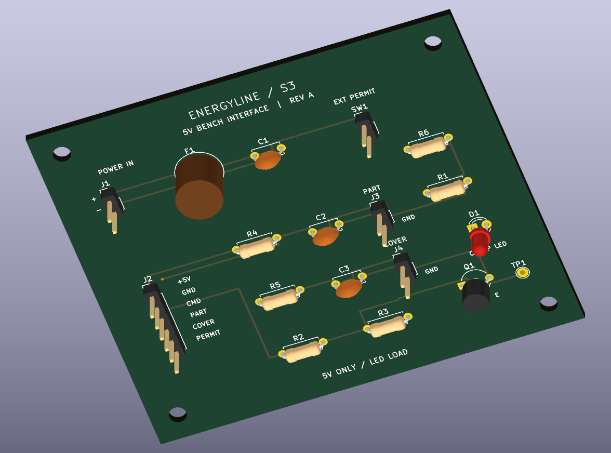

What the line study found
Improving S3 alone moves the constraint to S2. In the assumed faster S2/S3 configuration, four production operators plus one rework operator meet the 240-unit target in 198 of 200 simulated shifts.
A five-station assembly-line study with a virtual fastening cell, n8n experiment workflows, a routed 5 V LED interface PCB and a standalone Arduino demonstration.
This is a simulated engineering prototype. Production inputs are assumptions, and the PCB has not been physically built or tested.
Improving S3 alone moves the constraint to S2. In the assumed faster S2/S3 configuration, four production operators plus one rework operator meet the 240-unit target in 198 of 200 simulated shifts.
Eleven virtual-cell commissioning cases are recorded. KiCad reports zero configured PCB DRC violations, unconnected items and schematic mismatches. These are complementary checks, not physical validation.
Validation scope
Rendered design, not assembled hardware. The fuse uses a simplified dimensional envelope based on manufacturer dimensions.
The video covers the line study and virtual cell. PCB and Wokwi work are documented separately; no physical machine is shown.
Open the full Python application with no installation. Free hosting sleeps when idle and may take around a minute to wake. Experiments are shared and temporary; download results you want to keep. This static overview remains separate from the Python service, and no n8n instance is publicly hosted.
To run your own local copy:
git clone https://github.com/RahmanMdSazzadur/energyline.git
cd energyline
python3 src/api/server.pyUse Python 3.13.7, then open http://localhost:8787/portfolio on your own computer. The core application needs no pip packages.
Wokwi runs a three-second LED cycle using part, cover and permit switches. Input loss latches a fault; reset requires an unloaded part and restored permissives.
It is a standalone bench demonstration. It does not implement the complete virtual-cell controller or connect to n8n.
The repository includes editable source, configurations, drawings, PCB files, manufacturing outputs, simulation evidence, workflow definitions and documentation. Original project work is available under the MIT license. Third-party materials retain their terms.
License · Third-party notices · Contributing · Report an issue